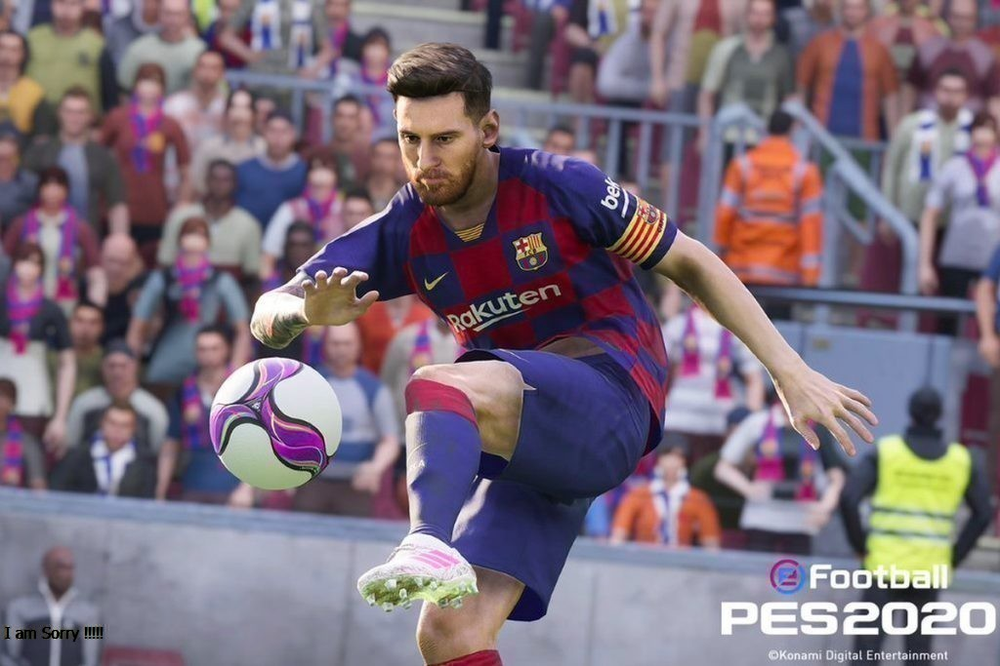

5 เกมกีฬา สนุก ๆ เล่นเพลิน ในปี 2024 บน PC
หากพูดถึงเกมกีฬามาจากความสนใจในการจำลองกิจกรรมทางกีฬาให้มีความเสมือนจริงในโลกคอมพิวเตอร์ โดยมีวัตถุประสงค์ในการสร้างความบันเทิง การแข่งขัน หรือการสนับสนุนกิจกรรมทางกีฬาต่างๆ และเกมเหล่านี้มักมีการพัฒนาที่ให้ความสำคัญ กับความเสมือนจริงในการแสดงท่าทาง และกราฟิกที่สมจริง เพื่อให้ผู้เล่นได้สัมผัสประสบการณ์ที่ใกล้เคียงกับการแข่งขันจริงในกีฬาที่เลือกเล่น การพัฒนาเกมกีฬามักเริ่มต้นจากการศึกษากีฬาและกฎระเบียบของกีฬานั้นๆ เพื่อให้มีการจำลองที่แม่นยำในเกม และมักใช้เทคโนโลยีใหม่ๆ เพื่อสร้างประสบการณ์ที่ดีขึ้นอยู่เสมอ นอกจากนี้ ที่มาของเกมกีฬายังเป็นที่ต้องการในวงการเกมมากๆ ในปัจจุบันเนื่องจากความต้องการของผู้เล่น ที่ต้องการประสบการณ์ที่สมจริงและมีคุณภาพสูงขึ้นตลอดเวลา
1.FIFA series

ซีรีส์เกม FIFA คือซีรีส์เกมที่พัฒนาและจัดจำหน่ายโดย EA Sports ซึ่งเป็นเกมที่จำลองกีฬาฟุตบอล มีความนิยมมากในเวลาอันยาวนาน แต่ละเวอร์ชันมักจะมีการอัพเดทรายชื่อผู้เล่น กราฟิกที่ปรับปรุงและ การปรับปรุงการเล่น เกมซีรีส์นี้มักมีโหมดต่าง ๆ เช่น โหมดอาชีพ อัลติเมททีม เล่นออนไลน์ และอื่นๆ FIFA มีผู้ติดตามมากมายทั่วโลกและโดดเด่นด้วยการเล่นที่สมจริงและความสนใจในรายละเอียดในการจำ ลองกีฬา
2.NBA 2K series

ซีรีส์เกม NBA 2K เป็นซีรีส์เกมแนวสปอร์ตที่พัฒนาและจัดจำหน่ายโดยบริษัท 2K Sports ซึ่งเป็นเกมที่ จำลองการแข่งขันบาสเกตบอลในลีก NBA (National Basketball Association) มีความนิยมและ ได้รับการยอมรับอย่างกว้างขวางจากแฟนๆ ซีรีส์นี้มีการพัฒนากราฟิกที่สวยงามและการจำลองที่สมจริงของ การเล่น มักมีการอัพเดทรายละเอียดของนักกีฬาและการเล่นให้ทันสถานการณ์ นอกจากนี้ยังมีโหมดเกมต่างๆ เช่น MyCareer, MyTeam, MyGM, และโหมดออนไลน์ เกม NBA 2K เป็นที่รู้จักด้วยการจำลองที่สมจริงของ การเล่นบาสเกตบอลและความสมจริงในการนำเสนอภาพลักษณ์ของลีก NBA
3.Top Spin 4

เกม Top Spin 4 เป็นเกมสำหรับคอนโซลเจนเนอร์และพีซีที่เน้นการแข่งขันเทนนิส ถูกพัฒนาโดยสตูดิโอ 2K Czech และได้รับความนิยมอย่างมากในวงการเกมกีฬา ภายในเกมมีนักเทนนิสชั้นนำจริงๆ โดยมีโหมดต่างๆ เช่น Career Mode, Exhibition Matches, และโหมดออนไลน์ ซีรีส์ Top Spin มีความยืดหยุ่นในการ ควบคุมและการเล่นที่ทันสมัย และได้รับคำชมจากคนรักเกมการแข่งขันทั้งในแง่ของภาพกราฟิกและความเรียบ ง่ายในการเข้าถึง สำหรับคนที่หลงใหลในเทนนิส Top Spin 4 เป็นเกมที่น่าสนใจที่จะสนุกกับการแข่งขันแบบ จำลองในโลกของเทนนิส
4.Fight Night Champion

"Fight Night Champion" เป็นเกมมวยที่ได้รับความนิยมสูง ถูกพัฒนาและเผยแพร่โดย EA Sports ภายในซีรีส์ "Fight Night" ซึ่งเป็นเกมมวยที่มีความสมจริงและความเรียบง่ายในการเล่น เกมนี้มีโหมดเรื่อง ราวแบบเซ็ทแผนที่นำเสนอเรื่องราวของนักมวยฝีมือหนึ่ง ในขณะที่มีการเล่นในโหมดชั่วโมงแห่งการท้าทายและ การแข่งขันกับคอมพิวเตอร์หรือผู้เล่นคนอื่น โดยเกมมีการควบคุมที่ตอบสนองดีและสามารถปรับแต่งการต่อสู้ได้ตาม ความชอบของผู้เล่น การแสดงกราฟิกและการจำลองของการต่อสู้ในเกมนี้ถือว่ามีความคล้ายคลึงกับการแข่งขันมวย จริง ถึงแม้ "Fight Night Champion" จะไม่ได้รับการอัพเดทต่ออีกต่อไป แต่ก็ยังคงเป็นที่รู้จักและเป็นที่ ติดตามอยู่ในวงการเกมมวย
5.Forza Motorsport series
ซีรีส์ Forza Motorsport เป็นเกมแข่งรถที่ได้รับความนิยมและได้รับการพัฒนาโดย Turn 10 Studios ซึ่งเป็นเกมที่ให้ประสบการณ์การแข่งรถที่ สมจริงและสมจริงมาก ภายในซีรีส์นี้มีรถจริงที่ถูกลิขสิทธิ์และจำลองมาอย่างละเอียด นอกจากนี้ยังมีโหมดที่หลากหลาย เช่น Career Mode, Online Multiplayer, และ Event Modes ที่ให้ประสบการณ์แข่งรถที่หลากหลายและน่าตื่นเต้น ซีรีส์ Forza Motorsport มีเสียงและกราฟิก ที่น่าประทับใจ และได้รับการยอมรับจากนักเล่นทั่วโลกในวงการแข่งรถเสมือนจริง ซึ่งมีการอัพเดทปรับปรุงและเพิ่มคุณภาพต่อไป เป็นที่รู้จักในวงการเกมแข่งรถ